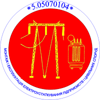
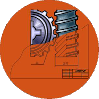
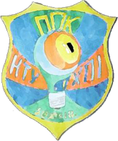
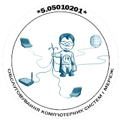

Історія закладу
Наші спеціальності
Спецальність 5.05010301: Розробка програмного забезпечення
Програмування – процес і мистецтво створення комп’ютерних програм та програмного забезпечення з допомогою мов програмування. Програмування поєднує в собі елементи мистецтва, фундаментальних наук (перш за все інформатика та математика), інженерії, спорту та ремесла. У вузькому сенсі слова, програмування розглядається як кодування алгоритмів на заданій мові програмування. Під програмуванням також може розумітися розробка логічної схеми для ПЛІС, а також процес запису інформації в ПЗП. У більш широкому сенсі програмування – процес створення програм, то є розробка програмного забезпечення. Визнаючи попит різних форм власності, закладів і організацій Полтавський політехнічний коледж у 2000 році організував нове відділення за спеціальністю 5.05010301
Спецальність 5.05070104: Монтаж і експлуатація електроустаткування підприємств і цивільних споруд
Немає жодної сфери життєдіяльності людини, де б не застосовувалась електроенергія. На промисловості, в закладах, в побуті, в сільському господарстві – скрізь необхідно монтувати, обслуговувати, експлуатувати, налагоджувати, контролювати електроприлади, складну побутову техніку, електрообладнання. Всюди можуть працювати наші випускники за вказаною спеціальністю. Враховуючи вимоги підприємств, Полтавський політехнічний коледж з 1961р. почав підготовку фахівців з цієї спеціальності.
Спецальність 5.05050302: Обробка матеріалів на верстатах та автоматичних лініях
Полтавський політехнічний коледж має статус вищого навчального закладу І рівня акредитації і на зазначену спеціальність проводить набір абітурієнтів на базі 9 класів, а також на 2-й курс на базі 11 класів на вакантні місця. Навчання на базі 9 класів за державним і контрактним замовленням. Термін навчання фахівців освітньо-кваліфікаційного рівня „молодший спеціаліст” вищезгаданої спеціальності 3 роки 10 місяців.
Спецальність 5.05070105: Виробництво електроосвітлювальних приладів та установок
Світлотехніка – область науки і техніки, предметом якої є дослідження принципів і розробка способів генерування, а також перетворення його енергії в інші види енергії і використання її в різних цілях. Вона включає в себе конструкторську та технологічну розробку джерел випромінювання і світлотехнічних установок. Полтавський політехнічний коледж з 1968 року почав підготовку фахівців з цієї спеціальності.
Спецальність 5.05010201: "Обслуговування комп'ютерних систем і мереж"
Полтавський політехнічний коледж почав підготовку фахівців з цієї спеціальності з 2011 року. Після закінчення навчання випускникам присвоюється кваліфікація «технік обчислювального (інформаційно-обчислювального) центру». Основними замовниками фахівців даної спеціальності є підприємства з ремонту та обслуговування комп'ютерної техніки, ІТ відділи банків, компанії будь-якого напрямку діяльності.
Читайте більше на сайті коледжу
Адміністрація коледжу
Першим директором нашого навчального закладу був демобілізований з лав радянської армії після закінчення Великої Вітчизняної війни офіцер, архітектор за спеціальністю Соколов Михайло Данилович. Після його виходу на пенсію з січня 1967 року директором технікуму стає Шаповал Володимир Прокопович, який до цього часу був заступником директора з навчальної роботи. У травні 1975 року в технікумі був уже новий директор Назаренко Анатолій Семенович, який проявив велику ініціативу, організаторські здібності і наполегливість у створенні матеріальної бази та удосконалення обладнання кабінетів та лабораторій. З вересня 1985 року директором технікуму стає Лучко Борис Іванович. Саме за час його роботи технікум стає коледжем, відкриваються нові спеціальності. А у листопаді 2003 року новим директором коледжу стає Рискін Валерій Аркадійович, який активно та цілеспрямовано продовжує роботу по вдосконаленню матеріально-технічної бази нашого навчального закладу та підвищенню його навчально-методичного рівня. А у листопаді 2003 року новим директором коледжу стає Рискін Валерій Аркадійович, який активно та цілеспрямовано продовжує роботу по вдосконаленню матеріально-технічної бази нашого навчального закладу та підвищенню його навчально-методичного рівня.